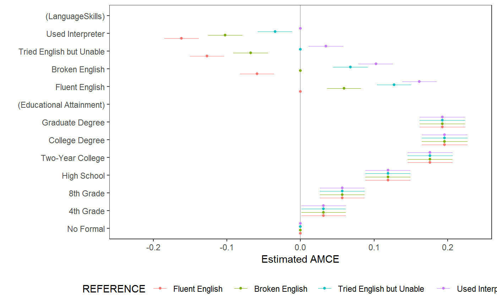

Estimate AMCEs for a conjoint analysis and return a tidy data frame of results
amce(data, formula, id = NULL, weights = NULL, feature_order = NULL, feature_labels = NULL, level_order = c("ascending", "descending"), alpha = 0.05, ...) amce_by_reference(data, formula, variable, ...)
| data | A data frame containing variables specified in |
|---|---|
| formula | A formula specifying an AMCE model to be estimated. All variables should be factors. Two-way constraints can be specified with an asterisk (*) between RHS features. The specific constrained level pairs within these features are then detected automatically. Higher-order constraints are not allowed. |
| id | An RHS formula specifying a variable holding respondent identifiers, to be used for clustering standard errors. |
| weights | An (optional) RHS formula specifying a variable holding survey weights. |
| feature_order | An (optional) character vector specifying the names of feature (RHS) variables in the order they should be encoded in the resulting data frame. |
| feature_labels | A named list of “fancy” feature labels to be used in output. By default, the function looks for a “label” attribute on each variable in |
| level_order | A character string specifying levels (within each feature) should be ordered increasing or decreasing in the final output. This is mostly only consequential for plotting via |
| alpha | A numeric value indicating the significance level at which to calculate confidence intervals for the MMs (by default 0.95, meaning 95-percent CIs are returned). |
| … | For |
| variable | An RHS formula containing a single factor variable from |
A data frame
amce provides estimates of AMCEs (or rather, average marginal effects for each feature level). Two-way constraints can be specified with an asterisk (*) between features. The specific constrained level pairs within these features are then detected automatically. The function can also be used for calculating average component interaction effects when combined with interaction, and for balance testing by specifying a covariate rather outcome on the left-hand side of formula. See examples.
amce_by_reference provides a tool for quick sensitivity analysis. AMCEs are defined relative to an arbitrary reference category (i.e., feature level). This function will loop over all feature levels (for a specified feature) to show how interpretation will be affected by choice of reference category. The resulting data frame will be a stacked result from amce, containing an additional BY column specifying which level of variable was used as the reference category. In unconstrained conjoint designs, only AMCEs for variable will vary by reference category; in constrained designs, AMCEs for any factor constrained by variable may also vary.
Users may desire to specify a family argument via …, which should be a “family” object such as gaussian. Sensible alternatives are binomial (for binary outcomes) and quasibinomial (for weighted survey data). See family for details. In such cases, effects are always reported on the link (not outcome) scale.
data("taxes") # estimating AMCEs amce(taxes, chose_plan ~ taxrate1 + taxrate2 + taxrate3 + taxrate4 + taxrate5 + taxrate6 + taxrev, id = ~ ID)#> outcome statistic feature level #> 1 chose_plan amce Tax rate for <$10,000 <10k: 0% #> 2 chose_plan amce Tax rate for <$10,000 <10k: 5% #> 3 chose_plan amce Tax rate for <$10,000 <10k: 15% #> 4 chose_plan amce Tax rate for <$10,000 <10k: 25% #> 5 chose_plan amce Tax rate for $10,000-$35,000 10-35k: 5% #> 6 chose_plan amce Tax rate for $10,000-$35,000 10-35k: 15% #> 7 chose_plan amce Tax rate for $10,000-$35,000 10-35k: 25% #> 8 chose_plan amce Tax rate for $10,000-$35,000 10-35k: 35% #> 9 chose_plan amce Tax rate for $25,000-$85,000 35-85k: 5% #> 10 chose_plan amce Tax rate for $25,000-$85,000 35-85k: 15% #> 11 chose_plan amce Tax rate for $25,000-$85,000 35-85k: 25% #> 12 chose_plan amce Tax rate for $25,000-$85,000 35-85k: 35% #> 13 chose_plan amce Tax rate for $85,000-$175,000 85-175k: 5% #> 14 chose_plan amce Tax rate for $85,000-$175,000 85-175k: 15% #> 15 chose_plan amce Tax rate for $85,000-$175,000 85-175k: 25% #> 16 chose_plan amce Tax rate for $85,000-$175,000 85-175k: 35% #> 17 chose_plan amce Tax rate for $175,000-$375,000 175-375k: 5% #> 18 chose_plan amce Tax rate for $175,000-$375,000 175-375k: 15% #> 19 chose_plan amce Tax rate for $175,000-$375,000 175-375k: 25% #> 20 chose_plan amce Tax rate for $175,000-$375,000 175-375k: 35% #> 21 chose_plan amce Tax rate for $175,000-$375,000 175-375k: 45% #> 22 chose_plan amce Tax rate for >$375,000 >375k: 5% #> 23 chose_plan amce Tax rate for >$375,000 >375k: 15% #> 24 chose_plan amce Tax rate for >$375,000 >375k: 25% #> 25 chose_plan amce Tax rate for >$375,000 >375k: 35% #> 26 chose_plan amce Tax rate for >$375,000 >375k: 45% #> 27 chose_plan amce Tax rate for >$375,000 >375k: 55% #> 28 chose_plan amce Tax revenue <75% #> 29 chose_plan amce Tax revenue 75-95% #> 30 chose_plan amce Tax revenue 95-105% #> 31 chose_plan amce Tax revenue 105-125% #> 32 chose_plan amce Tax revenue >125% #> estimate std.error z p lower #> 1 0.0000000000 NA NA NA NA #> 2 -0.0139987267 0.008367718 -1.67294431 9.433826e-02 -0.030399153 #> 3 -0.0897702241 0.009883554 -9.08278760 1.058290e-19 -0.109141634 #> 4 -0.2215066470 0.012497932 -17.72346405 2.763584e-70 -0.246002143 #> 5 0.0000000000 NA NA NA NA #> 6 -0.0161677383 0.010015769 -1.61422834 1.064779e-01 -0.035798285 #> 7 -0.0849079259 0.015824370 -5.36564325 8.066123e-08 -0.115923122 #> 8 -0.1868125806 0.021074682 -8.86431331 7.697701e-19 -0.228118198 #> 9 0.0000000000 NA NA NA NA #> 10 0.0005356495 0.008242105 0.06498941 9.481824e-01 -0.015618579 #> 11 -0.0533364485 0.009713809 -5.49078620 4.001485e-08 -0.072375164 #> 12 -0.1083416179 0.011917151 -9.09123502 9.792035e-20 -0.131698804 #> 13 0.0000000000 NA NA NA NA #> 14 0.0194226595 0.007719126 2.51617354 1.186368e-02 0.004293451 #> 15 0.0108897506 0.008078966 1.34791393 1.776861e-01 -0.004944732 #> 16 -0.0015463277 0.008431674 -0.18339509 8.544880e-01 -0.018072106 #> 17 0.0000000000 NA NA NA NA #> 18 0.0384042184 0.008581007 4.47549088 7.623595e-06 0.021585754 #> 19 0.0504838117 0.008867028 5.69343070 1.245118e-08 0.033104755 #> 20 0.0716090284 0.009162901 7.81510419 5.491758e-15 0.053650072 #> 21 0.0441842455 0.009601062 4.60201624 4.184206e-06 0.025366509 #> 22 0.0000000000 NA NA NA NA #> 23 0.0729290882 0.009630408 7.57279301 3.652841e-14 0.054053835 #> 24 0.1023481041 0.010525057 9.72423245 2.376912e-22 0.081719371 #> 25 0.1342706760 0.011342675 11.83765516 2.493265e-32 0.112039441 #> 26 0.1456934759 0.012358893 11.78855405 4.471520e-32 0.121470491 #> 27 0.1190155301 0.013344593 8.91863335 4.720775e-19 0.092860609 #> 28 0.0000000000 NA NA NA NA #> 29 0.0155562019 0.011532459 1.34890584 1.773672e-01 -0.007047003 #> 30 0.0433356897 0.016694623 2.59578726 9.437448e-03 0.010614830 #> 31 0.0613870891 0.020195352 3.03966418 2.368421e-03 0.021804926 #> 32 0.0866358183 0.027742084 3.12290235 1.790772e-03 0.032262333 #> upper #> 1 NA #> 2 0.002401700 #> 3 -0.070398814 #> 4 -0.197011151 #> 5 NA #> 6 0.003462808 #> 7 -0.053892730 #> 8 -0.145506964 #> 9 NA #> 10 0.016689878 #> 11 -0.034297733 #> 12 -0.084984432 #> 13 NA #> 14 0.034551868 #> 15 0.026724233 #> 16 0.014979450 #> 17 NA #> 18 0.055222683 #> 19 0.067862868 #> 20 0.089567985 #> 21 0.063001982 #> 22 NA #> 23 0.091804341 #> 24 0.122976837 #> 25 0.156501911 #> 26 0.169916461 #> 27 0.145170451 #> 28 NA #> 29 0.038159407 #> 30 0.076056550 #> 31 0.100969252 #> 32 0.141009303data("immigration") # estimating AMCEs with constraints amce(immigration, ChosenImmigrant ~ Gender + ReasonForApplication * CountryOfOrigin, id = ~CaseID)#> outcome statistic feature level #> 1 ChosenImmigrant amce Gender Female #> 2 ChosenImmigrant amce Gender Male #> 3 ChosenImmigrant amce Reason for Application Reunite with Family #> 4 ChosenImmigrant amce Reason for Application Seek Better Job #> 5 ChosenImmigrant amce Reason for Application Escape Persecution #> 6 ChosenImmigrant amce Country of Origin India #> 7 ChosenImmigrant amce Country of Origin Germany #> 8 ChosenImmigrant amce Country of Origin France #> 9 ChosenImmigrant amce Country of Origin Mexico #> 10 ChosenImmigrant amce Country of Origin Philippines #> 11 ChosenImmigrant amce Country of Origin Poland #> 12 ChosenImmigrant amce Country of Origin China #> 13 ChosenImmigrant amce Country of Origin Sudan #> 14 ChosenImmigrant amce Country of Origin Somalia #> 15 ChosenImmigrant amce Country of Origin Iraq #> estimate std.error z p lower upper #> 1 0.00000000 NA NA NA NA NA #> 2 -0.02386974 0.008480962 -2.8145085 4.885188e-03 -0.040492122 -0.007247360 #> 3 0.00000000 NA NA NA NA NA #> 4 -0.04021489 0.009280447 -4.3332921 1.468960e-05 -0.055479862 -0.024949909 #> 5 0.06348691 0.016457202 3.8576974 1.144602e-04 0.036417217 0.090556594 #> 6 0.00000000 NA NA NA NA NA #> 7 0.04121730 0.018742720 2.1991098 2.787012e-02 0.010388267 0.072046328 #> 8 0.01525971 0.018683163 0.8167628 4.140640e-01 -0.015471357 0.045990781 #> 9 0.01035101 0.018942714 0.5464374 5.847653e-01 -0.020806985 0.041508998 #> 10 0.02924740 0.018847108 1.5518242 1.207043e-01 -0.001753336 0.060248133 #> 11 0.02461786 0.018815217 1.3084015 1.907372e-01 -0.006330420 0.055566137 #> 12 -0.02825290 0.022297912 -1.2670648 2.051321e-01 -0.064929701 0.008423902 #> 13 -0.04805734 0.022367903 -2.1484957 3.167440e-02 -0.084849267 -0.011265416 #> 14 -0.05482678 0.022326453 -2.4556869 1.406156e-02 -0.091550525 -0.018103031 #> 15 -0.11905836 0.021435015 -5.5543868 2.785881e-08 -0.154315823 -0.083800900# estimating average component interaction effects (AMCEs of feature combinations) immigration$language_entry <- interaction(immigration$LanguageSkills, immigration$PriorEntry, sep = "_") amce(immigration,ChosenImmigrant ~ language_entry, id = ~CaseID)#> outcome statistic feature #> 1 ChosenImmigrant amce language_entry #> 2 ChosenImmigrant amce language_entry #> 3 ChosenImmigrant amce language_entry #> 4 ChosenImmigrant amce language_entry #> 5 ChosenImmigrant amce language_entry #> 6 ChosenImmigrant amce language_entry #> 7 ChosenImmigrant amce language_entry #> 8 ChosenImmigrant amce language_entry #> 9 ChosenImmigrant amce language_entry #> 10 ChosenImmigrant amce language_entry #> 11 ChosenImmigrant amce language_entry #> 12 ChosenImmigrant amce language_entry #> 13 ChosenImmigrant amce language_entry #> 14 ChosenImmigrant amce language_entry #> 15 ChosenImmigrant amce language_entry #> 16 ChosenImmigrant amce language_entry #> 17 ChosenImmigrant amce language_entry #> 18 ChosenImmigrant amce language_entry #> 19 ChosenImmigrant amce language_entry #> 20 ChosenImmigrant amce language_entry #> level estimate std.error #> 1 Fluent English_Never 0.00000000 NA #> 2 Broken English_Never -0.09639390 0.02618064 #> 3 Tried English but Unable_Never -0.17526907 0.02582059 #> 4 Used Interpreter_Never -0.17542363 0.02683525 #> 5 Fluent English_Once as Tourist 0.03664704 0.02615310 #> 6 Broken English_Once as Tourist -0.02639390 0.02572048 #> 7 Tried English but Unable_Once as Tourist -0.07680028 0.02665136 #> 8 Used Interpreter_Once as Tourist -0.15054298 0.02661602 #> 9 Fluent English_Many Times as Tourist 0.02582832 0.02547902 #> 10 Broken English_Many Times as Tourist -0.02041705 0.02647773 #> 11 Tried English but Unable_Many Times as Tourist -0.08809827 0.02648818 #> 12 Used Interpreter_Many Times as Tourist -0.13849139 0.02736039 #> 13 Fluent English_Six Months with Family 0.02860610 0.02572849 #> 14 Broken English_Six Months with Family 0.00449631 0.02642545 #> 15 Tried English but Unable_Six Months with Family -0.07200365 0.02593916 #> 16 Used Interpreter_Six Months with Family -0.11206341 0.02683160 #> 17 Fluent English_Once w/o Authorization -0.13127762 0.02624380 #> 18 Broken English_Once w/o Authorization -0.20980331 0.02644584 #> 19 Tried English but Unable_Once w/o Authorization -0.27527953 0.02577453 #> 20 Used Interpreter_Once w/o Authorization -0.28126785 0.02589821 #> z p lower upper #> 1 NA NA NA NA #> 2 -3.6818774 2.315227e-04 -0.14770700 -0.04508079 #> 3 -6.7879576 1.137321e-11 -0.22587650 -0.12466164 #> 4 -6.5370602 6.273978e-11 -0.22801975 -0.12282751 #> 5 1.4012500 1.611393e-01 -0.01461210 0.08790618 #> 6 -1.0261820 3.048058e-01 -0.07680512 0.02401732 #> 7 -2.8816643 3.955810e-03 -0.12903600 -0.02456457 #> 8 -5.6561043 1.548474e-08 -0.20270942 -0.09837654 #> 9 1.0137094 3.107214e-01 -0.02410964 0.07576629 #> 10 -0.7711028 4.406460e-01 -0.07231245 0.03147835 #> 11 -3.3259466 8.811880e-04 -0.14001415 -0.03618239 #> 12 -5.0617482 4.154294e-07 -0.19211676 -0.08486601 #> 13 1.1118456 2.662046e-01 -0.02182080 0.07903301 #> 14 0.1701507 8.648916e-01 -0.04729663 0.05628925 #> 15 -2.7758665 5.505482e-03 -0.12284348 -0.02116383 #> 16 -4.1765458 2.959692e-05 -0.16465239 -0.05947444 #> 17 -5.0022344 5.666961e-07 -0.18271451 -0.07984072 #> 18 -7.9333195 2.133646e-15 -0.26163621 -0.15797042 #> 19 -10.6802923 1.258746e-26 -0.32579668 -0.22476238 #> 20 -10.8605119 1.777501e-27 -0.33202741 -0.23050828# balance testing example plot(amce(immigration[!is.na(immigration$ethnocentrism),], ethnocentrism ~ Gender + Education + LanguageSkills, id = ~ CaseID))# reference category sensitivity x <- amce_by_reference(immigration, ChosenImmigrant ~ LanguageSkills + Education, variable = ~ LanguageSkills, id = ~ CaseID) # plot plot(x, group = "BY")